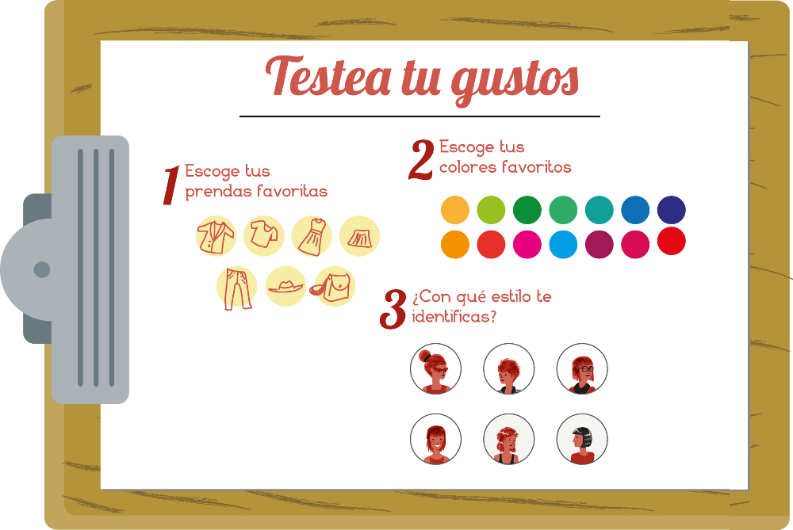

+
=
Las Traperas Online
tu asesor de moda personal
PRO BLE MAS
MODA
MERCADO
PUBLICIDAD
ONLINE
En la Moda
falta de identidad y homogenizacion

En los Mercados
todos usamos ropa, pero no todos usamos el mismo tipo tenemos identificados targets: señora ficha, la chibola vintage, la ejecutiva, la moderna, hippie ...

no existe un lugar donde intercambiar ropa

En la Publicidad Online
poco certera
Basada en datos inferidos de los navegadores o propios una plataforma específica (aka fb)
=> los usuarios necesitamos
sintonizar
la publicidad a nuestras necesidades

La herramienta
¿Cómo sería?
usuarios
nosotros
el
planeta
para las usuarias:
tests lúdicos sobre tus gustos
*

*
La misma razon por la que funciona cosmopolitan
a Nosotros
nos permite conocer a nuestr@s usuari@s e identificar tempranamente tendencias
para los usuarios:
aprende de ellos y les ofrece lo que realmente les puedan interesar

a nosotros
- nos permite itentificar posibles proveedoras
- estimular la creación de un vínculo entre usuaria-herramienta
- ofertar a la medida
para los usuarios:
calcula tu huella ecológica

para el planeta
crea conciencia y promueve el consumo responsable
a Nosotros nos brinda
- Información más confiable y de primera mano
- + una herramienta para el estudio "en vivo" de mercado
- = Un modelo de negocio basado en la gestión de la información y el conocimiento, que nos permite adaptarnos rápidamente a los cambios del mercado.
para el Planeta y la Humanidad
- Democratización del acceso a la moda
- Descentralización y desverticalización de la economía
- Minimización de la huella ecológica
¿Por qué deben elegirnos?
- Equipo multidisciplinario de creativos
- Mayormente compuesto por mujeres
- Tenemos un mercado ya identificado